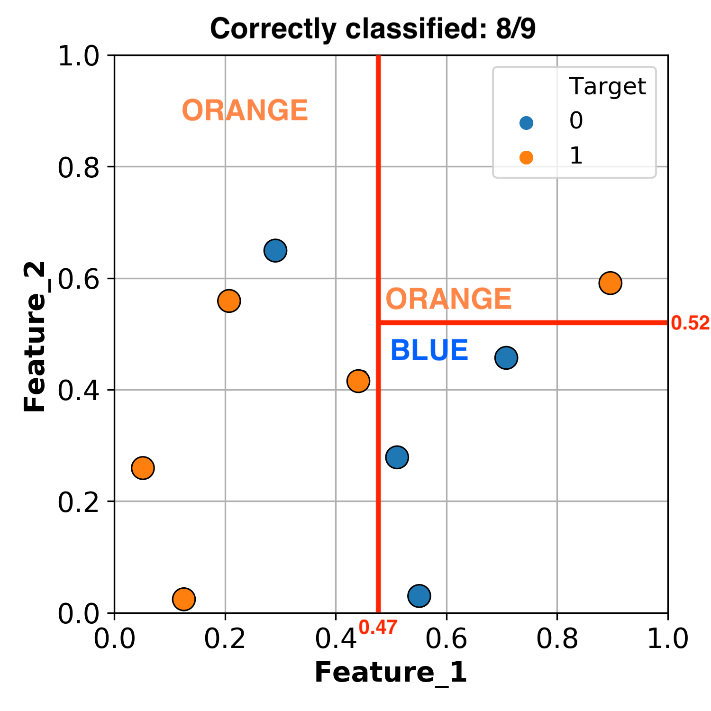

Intro to ML & Decision Trees
Contents
1. Intro to ML & Decision Trees#
1.1. Welcome#
Welcome to Bait 509 - Business Application of Machine Learning!
Note
Buckle up because there are going to be a lot of new concepts here but in the lyrics of Trooper “We’re here for a good time, Not a long time”.
1.1.1. Course Learning Objectives#
Describe fundamental machine learning concepts such as: supervised and unsupervised learning, regression and classification, overfitting, training/validation/testing error, parameters and hyperparameters, and the golden rule.
Broadly explain how common machine learning algorithms work, including: naïve Bayes, k-nearest neighbors, decision trees, support vector machines, and logistic regression.
Identify when and why to apply data pre-processing techniques such as scaling and one-hot encoding.
Use Python and the scikit-learn package to develop an end-to-end supervised machine learning pipeline.
Apply and interpret machine learning methods to carry out supervised learning projects and to answer business objectives.
1.1.2. Course Structure#
2 lectures per week (Synchonus lecture + class activity)
My office hours: 2-3 pm Thursday on Zoom
Course content available on this website or on Canvas.
We will be using Piazza for discussions and questions.
Assessments:
Assessment |
Due |
Weight |
|---|---|---|
Assignment 1 |
Jan 18 |
20% |
Quiz |
Jan 24 |
10% |
Assignment 2 |
Jan 26 |
20% |
Assignment 3 |
Feb 2 |
20% |
Final Project |
Feb 12 |
30% |
All assessments will be submitted via Canvas.
1.1.3. Python, Jupyter, Visualizations#
In this course we be using Python and Jupyter notebooks for lectures as well as assignments.
I recommend using the Miniconda distribution to install and manage your Python package installations, but you are free to use either Anaconda or pip if you prefer that.
If you are using Miniconda or Anaconda, you can install a few key packages we will be using in the course, by typing the following at the command line (the “Anaconda prompt” on Windows, and the default terminal application on MacOS/Linux):
conda install xgboost jupyter altair_saver seabornOtherwise you can use pip and type the following at the command line:
pip install xgboost jupyter altair_saver seabornSome packages that we will make heavy use of are installed together with the packages above, most notably
pandas,numpy,matplotlib, andscikit-learn.You will also need install one package via
pipdirectly from GitHub (regardless of if you used conda or pip above).pip install git+git://github.com/mgelbart/plot-classifier.gitWe will be making visualizations for this course and I give the option of plotting using any Python library but I strongly recommend getting familiar with
altair. I have 2 very quick slide decks that teach you a bit about how to plot usingaltair. From the course Programming in Python for Data ScienceModule 1, exercise 31, 32, 33
Module 2, exercise 29, 30
And if you want to dive further there is a whole course dedicated to visualizing plots using
altaircalled Data Visualization.
1.1.4. Lecture Learning Objectives#
Don’t worry if some of these terms don’t make sense up front, they will after we have covered them during today’s lecture.
Explain motivation to study machine learning.
Differentiate between supervised and unsupervised learning.
Differentiate between classification and regression problems.
Explain machine learning terminology such as features, targets, training, and error.
Explain the
.fit()and.predict()paradigm and use.score()method of ML models.Broadly describe how decision trees make predictions.
Use
DecisionTreeClassifier()andDecisionTreeRegressor()to build decision trees using scikit-learn.Explain the difference between parameters and hyperparameters.
Explain how decision boundaries change with
max_depth.
1.2. What is Machine Learning (ML)?#
Machine learning is all around us. You can find it in things like:

Voice assistance
Google news
Recommender systems
Face recognition
Auto completion
Stock market predictions
Character recognition
Self-driving cars
Cancer diagnosis
Drug discovery
Machine Learning can mean many different things to different people. In this course, we will stick to how it is defined in the seminal textbook “Introduction to Statistical Learning” which defines Statistical/Machine Learning as a “set of tools for making sense of complex datasets”. As you can hear, this is still rather broad, and we will refine our understanding throughout this course. Let’s start right now by looking at some specific examples of Machine Learning problems.
1.2.1. Examples of Machine Learning#
In all the the upcoming examples, Don’t worry about the code. Just focus on the input and output in each example.
1.2.1.1. Example 1: Predict Housing Prices#
Data Attribution: house sales prediction dataset.
First, let’s read in and have a glance at the dataset we will be using.
import pandas as pd
df = pd.read_csv("data/kc_house_data.csv").drop(columns=["id", "date"])
df
| price | bedrooms | bathrooms | sqft_living | sqft_lot | floors | waterfront | view | condition | grade | sqft_above | sqft_basement | yr_built | yr_renovated | zipcode | lat | long | sqft_living15 | sqft_lot15 | |
|---|---|---|---|---|---|---|---|---|---|---|---|---|---|---|---|---|---|---|---|
| 0 | 221900.0 | 3 | 1.00 | 1180 | 5650 | 1.0 | 0 | 0 | 3 | 7 | 1180 | 0 | 1955 | 0 | 98178 | 47.5112 | -122.257 | 1340 | 5650 |
| 1 | 538000.0 | 3 | 2.25 | 2570 | 7242 | 2.0 | 0 | 0 | 3 | 7 | 2170 | 400 | 1951 | 1991 | 98125 | 47.7210 | -122.319 | 1690 | 7639 |
| 2 | 180000.0 | 2 | 1.00 | 770 | 10000 | 1.0 | 0 | 0 | 3 | 6 | 770 | 0 | 1933 | 0 | 98028 | 47.7379 | -122.233 | 2720 | 8062 |
| 3 | 604000.0 | 4 | 3.00 | 1960 | 5000 | 1.0 | 0 | 0 | 5 | 7 | 1050 | 910 | 1965 | 0 | 98136 | 47.5208 | -122.393 | 1360 | 5000 |
| 4 | 510000.0 | 3 | 2.00 | 1680 | 8080 | 1.0 | 0 | 0 | 3 | 8 | 1680 | 0 | 1987 | 0 | 98074 | 47.6168 | -122.045 | 1800 | 7503 |
| ... | ... | ... | ... | ... | ... | ... | ... | ... | ... | ... | ... | ... | ... | ... | ... | ... | ... | ... | ... |
| 21608 | 360000.0 | 3 | 2.50 | 1530 | 1131 | 3.0 | 0 | 0 | 3 | 8 | 1530 | 0 | 2009 | 0 | 98103 | 47.6993 | -122.346 | 1530 | 1509 |
| 21609 | 400000.0 | 4 | 2.50 | 2310 | 5813 | 2.0 | 0 | 0 | 3 | 8 | 2310 | 0 | 2014 | 0 | 98146 | 47.5107 | -122.362 | 1830 | 7200 |
| 21610 | 402101.0 | 2 | 0.75 | 1020 | 1350 | 2.0 | 0 | 0 | 3 | 7 | 1020 | 0 | 2009 | 0 | 98144 | 47.5944 | -122.299 | 1020 | 2007 |
| 21611 | 400000.0 | 3 | 2.50 | 1600 | 2388 | 2.0 | 0 | 0 | 3 | 8 | 1600 | 0 | 2004 | 0 | 98027 | 47.5345 | -122.069 | 1410 | 1287 |
| 21612 | 325000.0 | 2 | 0.75 | 1020 | 1076 | 2.0 | 0 | 0 | 3 | 7 | 1020 | 0 | 2008 | 0 | 98144 | 47.5941 | -122.299 | 1020 | 1357 |
21613 rows × 19 columns
The next step is to divide the rows of the data in one subset that we will use for training the model
and one subset that we will use for testing/evaluating the model.
We will also divide the columns into the ones we want to use as the input “features”
and the one(s) we are trying to predict, the output “target”.
By convention we call the input features X
and the target that we are trying to predict for y.
Here we want to try to predict the price columns
using the information from all the other columns in the data.
from sklearn.model_selection import train_test_split
# Split the rows into train and test
train_df, test_df = train_test_split(df, test_size=0.2, random_state=4)
# Split the columns into intput (X) and output (y)
X_train = train_df.drop(columns=["price"])
y_train = train_df["price"]
X_test = test_df.drop(columns=["price"])
y_test = test_df["price"]
Next let’s train a of our choice model using the dedicated training data. Here we are using a model called xgboost, and since we are trying to predict a numerical value, we are using the regression xgboost model. You will see below that a description of the model is outputted when the code is run, but for now we don’t need to worry about what this means.
from xgboost import XGBRegressor
model = XGBRegressor()
model.fit(X_train, y_train);
Finally we want to check how well our model performed. First we will just eyeball the predicted the prices for the test data and compare them to the actual prices.
pred_df = pd.DataFrame({
"predicted_price": model.predict(X_test),
"actual_price": y_test
})
pred_df.join(X_test)
| predicted_price | actual_price | bedrooms | bathrooms | sqft_living | sqft_lot | floors | waterfront | view | condition | grade | sqft_above | sqft_basement | yr_built | yr_renovated | zipcode | lat | long | sqft_living15 | sqft_lot15 | |
|---|---|---|---|---|---|---|---|---|---|---|---|---|---|---|---|---|---|---|---|---|
| 13248 | 333981.62500 | 311100.0 | 4 | 2.25 | 2130 | 8078 | 1.0 | 0 | 0 | 4 | 7 | 1380 | 750 | 1977 | 0 | 98055 | 47.4482 | -122.209 | 2300 | 8112 |
| 5309 | 615222.43750 | 535000.0 | 3 | 2.50 | 2210 | 7620 | 2.0 | 0 | 0 | 3 | 8 | 2210 | 0 | 1994 | 0 | 98052 | 47.6938 | -122.130 | 1920 | 7440 |
| 10962 | 329770.06250 | 271000.0 | 4 | 1.50 | 1800 | 9576 | 1.0 | 0 | 0 | 4 | 7 | 1800 | 0 | 1977 | 0 | 98045 | 47.4664 | -121.747 | 1370 | 9576 |
| 20976 | 565091.62500 | 705000.0 | 3 | 2.50 | 1580 | 1321 | 2.0 | 0 | 2 | 3 | 8 | 1080 | 500 | 2014 | 0 | 98107 | 47.6688 | -122.402 | 1530 | 1357 |
| 19957 | 807697.87500 | 840000.0 | 2 | 2.50 | 1680 | 975 | 3.0 | 0 | 0 | 3 | 9 | 1680 | 0 | 2009 | 0 | 98119 | 47.6321 | -122.361 | 1680 | 977 |
| ... | ... | ... | ... | ... | ... | ... | ... | ... | ... | ... | ... | ... | ... | ... | ... | ... | ... | ... | ... | ... |
| 8527 | 820445.50000 | 610000.0 | 4 | 2.75 | 2640 | 8400 | 1.0 | 0 | 2 | 3 | 8 | 1440 | 1200 | 1947 | 0 | 98144 | 47.5882 | -122.290 | 2610 | 6000 |
| 16521 | 244517.59375 | 187000.0 | 3 | 2.50 | 1730 | 1803 | 2.0 | 0 | 0 | 3 | 7 | 1730 | 0 | 2005 | 0 | 98166 | 47.4648 | -122.335 | 1190 | 7980 |
| 17198 | 294955.50000 | 305000.0 | 3 | 2.00 | 1490 | 7697 | 1.0 | 0 | 0 | 3 | 7 | 1490 | 0 | 1994 | 0 | 98059 | 47.4852 | -122.164 | 1540 | 7529 |
| 7539 | 936004.12500 | 809000.0 | 4 | 1.50 | 1840 | 4337 | 2.0 | 0 | 0 | 4 | 8 | 1840 | 0 | 1917 | 0 | 98112 | 47.6312 | -122.307 | 2250 | 4337 |
| 4853 | 787805.25000 | 840000.0 | 4 | 2.25 | 2100 | 3671 | 1.5 | 0 | 0 | 3 | 8 | 1750 | 350 | 1929 | 0 | 98112 | 47.6359 | -122.300 | 1800 | 4560 |
4323 rows × 20 columns
From this quick glance at the results, the model seems to do OK in the sense that it largely understand which houses should be valued more or less, but the exact values are still a bit off.
There are format metrics to more accurately describe how well our model performed. We will talk more about this later, but the general idea is that we can get a number between 0-1 on how good our model is in general instead of having to look at the prediction for each row individually.
model.score(X_test, y_test)
0.8880546138276236
1.2.1.2. Example 2: Predict Creditcard Default#
Data Attribution: credit card fraud detection data set
Here we will go through the same steps as in the example above, but rather than trying to determine an exact numerical value, we are trying to determine a categorical outcome. In this case we are trying to predict whether a person is likely to default (class = 1) or not (class = 0) on their credit card given a bunch of input features. Note that although we don’t know what the input features are, the model might still use them to find which values of which input features are related to defaulting on your credit card.
cc_df = pd.read_csv("data/creditcard_sample.csv").sample(10_000, random_state=390)
cc_df
| Time | V1 | V2 | V3 | V4 | V5 | V6 | V7 | V8 | V9 | ... | V21 | V22 | V23 | V24 | V25 | V26 | V27 | V28 | Amount | Class | |
|---|---|---|---|---|---|---|---|---|---|---|---|---|---|---|---|---|---|---|---|---|---|
| 77244 | 148572.0 | -2.192803 | -1.184063 | -0.587411 | -0.624137 | 2.856276 | -2.058827 | 0.253898 | -0.361502 | 0.473344 | ... | -0.006427 | 0.627750 | -0.634097 | 0.693558 | -0.258117 | -0.753612 | 0.538571 | 0.305432 | 94.47 | 0 |
| 112513 | 97024.0 | -1.958810 | 0.992661 | 0.229305 | 3.158607 | 2.590061 | -1.197520 | 1.031590 | 0.102072 | -1.639767 | ... | 0.300789 | 0.423192 | -0.680045 | 1.130778 | 1.439294 | 0.377042 | -0.209320 | -0.242601 | 1.51 | 0 |
| 98163 | 138463.0 | 0.123289 | 1.079440 | -0.466330 | -0.420373 | 1.105829 | -0.739383 | 1.156067 | -0.392044 | -0.146092 | ... | 0.270423 | 1.183270 | -0.297665 | -0.437083 | -0.337571 | -0.177253 | 0.097323 | -0.046671 | 8.39 | 0 |
| 16889 | 148014.0 | 2.205836 | 0.170743 | -2.480998 | -0.183286 | 1.001373 | -1.222709 | 0.852123 | -0.604090 | 0.151221 | ... | 0.089298 | 0.454132 | -0.180294 | -0.921876 | 0.604957 | 0.300060 | -0.082035 | -0.087539 | 3.85 | 0 |
| 30631 | 168840.0 | -1.233511 | -0.769039 | -0.311892 | -0.751171 | -0.212926 | -0.962064 | 0.092553 | 0.402238 | -1.286992 | ... | 0.290688 | 0.833095 | 0.186440 | -0.007625 | -0.434240 | -0.080610 | 0.320599 | 0.074183 | 147.50 | 0 |
| ... | ... | ... | ... | ... | ... | ... | ... | ... | ... | ... | ... | ... | ... | ... | ... | ... | ... | ... | ... | ... | ... |
| 84485 | 41258.0 | 1.157116 | -0.227916 | 1.122789 | 0.671485 | -0.872917 | 0.213669 | -0.731842 | 0.241341 | 0.694209 | ... | -0.060517 | -0.020915 | -0.024279 | 0.046264 | 0.267848 | 0.319370 | 0.012120 | 0.014212 | 11.49 | 0 |
| 60723 | 22476.0 | 1.314683 | 0.188203 | -1.150419 | -0.279736 | 2.213941 | 3.228529 | -0.598057 | 0.724365 | 1.210910 | ... | -0.493294 | -1.334642 | 0.107215 | 0.885085 | 0.346663 | 0.072047 | -0.048533 | 0.017192 | 1.79 | 0 |
| 39885 | 143578.0 | 1.761024 | -1.325650 | -1.875881 | -0.641276 | 0.205655 | 0.844432 | -0.280825 | 0.202457 | -0.696063 | ... | -0.353462 | -0.740336 | 0.172985 | -1.664172 | -0.472072 | 0.579761 | -0.060095 | -0.066952 | 162.47 | 0 |
| 5043 | 142589.0 | 1.381656 | -2.291059 | -1.357021 | -0.960894 | -0.337165 | 1.837831 | -0.860187 | 0.524134 | 0.025136 | ... | 0.066074 | -0.517941 | 0.157722 | -0.989422 | -0.771393 | -0.524638 | -0.021692 | -0.006208 | 353.36 | 0 |
| 50693 | 52408.0 | -1.121774 | 1.046825 | 1.449851 | -0.853597 | -0.697472 | -0.891311 | -0.019569 | 0.531940 | -0.019775 | ... | -0.095875 | -0.278814 | 0.167095 | 0.637857 | -0.326769 | 0.659947 | 0.175923 | 0.061234 | 4.13 | 0 |
10000 rows × 31 columns
train_df, test_df = train_test_split(cc_df, test_size=.2, random_state=413)
X_train = train_df.drop(columns=['Class'])
y_train = train_df['Class']
X_test = test_df.drop(columns=['Class'])
y_test = test_df['Class']
from xgboost import XGBClassifier
model = XGBClassifier(use_label_encoder=False)
model.fit(X_train, y_train);
# This will output a warning which refers to a change in the default behavior and that can be ignored for now
[13:14:50] WARNING: /home/conda/feedstock_root/build_artifacts/xgboost-split_1637426272325/work/src/learner.cc:1115: Starting in XGBoost 1.3.0, the default evaluation metric used with the objective 'binary:logistic' was changed from 'error' to 'logloss'. Explicitly set eval_metric if you'd like to restore the old behavior.
pred_df = pd.DataFrame({
"predicted_price": model.predict(X_test),
"actual_price": y_test
})
pred_df.join(X_test)
| predicted_price | actual_price | Time | V1 | V2 | V3 | V4 | V5 | V6 | V7 | ... | V20 | V21 | V22 | V23 | V24 | V25 | V26 | V27 | V28 | Amount | |
|---|---|---|---|---|---|---|---|---|---|---|---|---|---|---|---|---|---|---|---|---|---|
| 111132 | 0 | 0 | 99190.0 | -0.136738 | 0.564715 | 0.157284 | -0.719750 | 1.175614 | 0.920017 | 0.387763 | ... | -0.287078 | -0.316661 | -0.524482 | 0.151172 | -1.542696 | -0.796923 | 0.209887 | 0.253875 | 0.062003 | 3.99 |
| 121903 | 0 | 0 | 130274.0 | 2.113383 | -0.084617 | -1.462568 | 0.004176 | 0.250580 | -0.800686 | 0.175293 | ... | -0.149559 | 0.283130 | 1.187823 | -0.185627 | -0.560881 | 0.563192 | -0.204496 | 0.021032 | -0.060979 | 1.04 |
| 87849 | 0 | 0 | 39423.0 | -1.841569 | -0.924729 | 0.683529 | -1.240802 | -0.040076 | -1.644745 | 0.028578 | ... | -0.295739 | -0.287965 | -0.448146 | -0.241471 | 0.458841 | -0.488022 | 0.795167 | 0.016911 | -0.297358 | 88.00 |
| 134 | 1 | 1 | 70270.0 | -1.512516 | 1.133139 | -1.601052 | 2.813401 | -2.664503 | -0.310371 | -1.520895 | ... | 1.249586 | 0.729828 | 0.485286 | 0.567005 | 0.323586 | 0.040871 | 0.825814 | 0.414482 | 0.267265 | 318.11 |
| 115580 | 0 | 0 | 129611.0 | 1.983675 | -0.563139 | -0.556800 | 0.070248 | -0.240229 | 0.532842 | -0.824306 | ... | -0.073943 | 0.036475 | 0.226705 | 0.117428 | -0.331401 | -0.147280 | -0.700302 | 0.072757 | -0.019535 | 39.42 |
| ... | ... | ... | ... | ... | ... | ... | ... | ... | ... | ... | ... | ... | ... | ... | ... | ... | ... | ... | ... | ... | ... |
| 68059 | 0 | 0 | 46546.0 | -1.906055 | 1.330466 | 0.822306 | -0.209197 | -0.246915 | -0.205031 | 0.117844 | ... | -0.147033 | -0.109164 | -0.433282 | 0.235205 | -0.022674 | -0.248697 | 0.035313 | -0.444826 | 0.234728 | 13.28 |
| 21742 | 0 | 0 | 150611.0 | -4.853459 | 3.917655 | -1.728775 | 1.001013 | -2.521175 | 0.154400 | -2.298054 | ... | -0.151779 | -0.365927 | -1.562024 | 0.294809 | 0.576851 | 0.807743 | -0.796429 | -0.363074 | -0.100201 | 20.93 |
| 7003 | 0 | 0 | 145475.0 | -0.574999 | -0.249851 | 1.507838 | -2.183949 | -0.233760 | -0.089817 | -0.177221 | ... | 0.374122 | 0.029454 | 0.063281 | -0.215382 | 0.318620 | 0.596239 | -0.236673 | 0.014326 | -0.184974 | 55.95 |
| 45985 | 0 | 0 | 53355.0 | 1.257516 | 0.097742 | -0.299899 | 0.869715 | 0.715477 | 1.119524 | -0.116036 | ... | -0.170771 | -0.174101 | -0.300020 | -0.275479 | -1.704110 | 0.849335 | -0.220576 | 0.031867 | -0.014047 | 1.00 |
| 87194 | 0 | 0 | 45069.0 | 1.076270 | -1.898885 | 0.065107 | -1.316359 | -1.669659 | -0.382944 | -0.846787 | ... | 0.133069 | -0.286476 | -1.098696 | -0.130274 | -0.534818 | 0.108739 | -0.380314 | -0.013497 | 0.062206 | 263.70 |
2000 rows × 32 columns
model.score(X_test, y_test)
0.9985
A score this high means that almost all observations were correctly predicted!
1.3. Types of Machine Learning#
Supervised learning (this course)
Unsupervised learning
1.3.1. Supervised Learning:#
Example: Labelling emails as spam or not
In supervised machine learning, we have a set of observations usually denoted with an uppercase
X.We also have a set of corresponding targets usually denoted with a lowercase
y.Our goal is to define a function that relates
Xtoy.We then use this function to predict the targets of new examples.
{kind=link}
1.3.2. UnSupervised Learning: (not going into detail here)#
Example: Categorizing Google News articles.
In unsupervised learning, we are not given target labels and are instead only given observations
X.We apply an algorithm to try find patterns/structure in our data and divide the observations into groups/clusters that share similar characteristics from our data.
E.g. it could be that we want find out if there are groups of business that operate similarly based a few key business metrics. We might not know up front how many groups there are in the data, and an unsupervised clustering algorithm could help us understand if there e.g. are two very distinct set of strategies that business employ (two clusters), or if there is a big mix and no clear structure at all in our data.
Another example can be seen below, we might get input images of cats and dogs and ask the algorithm to cluster them together based on any property that can be extracted from the images (color, size, shapes, etc).

1.4. Types of Supervised Learning: Classification vs Regression#
Classification
Regression
1.4.1. Classification#
Classification predicting among two or more categories, also known as classes.
Example1: Predict whether a customer will default on their credit card or not.
Example2: Predict if an animal is a reptile, mammal or bird.
1.4.2. Regression#
Regression predicting a continuous (in other words, a number) value.
Example1: Predict housing prices
Example2: Predict the length of a snake.
{kind=link}
1.5. Let’s Practice#
Are the following supervised or unsupervised problems?
1. Finding groups of similar properties in a real estate data set.
2. Predicting real estate prices based on house features like number of rooms, learning from past sales as examples.
3. Identifying groups of animals given features such as “number of legs”, “wings/no wings”, “fur/no fur”, etc.
4. Detecting heart disease in patients based on different test results and history.
5. Grouping articles on different topics from different news sources (something like Google News app).
Are the following classification or regression problems?
6. Predicting the price of a house based on features such as number of rooms and the year built.
7. Predicting if a house will sell or not based on features like the price of the house, number of rooms, etc.
8. Predicting your grade in BAIT 509 based on past grades.
9. Predicting whether you should bicycle tomorrow or not based on the weather forecast.
10. Predicting a cereal’s manufacturer given the nutritional information.
Solutions!
Unsupervised
Supervised
Unsupervised
Supervised
Unsupervised
Regression
Classification
Regression
Classification
Classification
1.6. Tabular Data and Terminology#
Basic terminology used in ML:
examples/observations = rows
features/variables = inputs (columns)
targets = outputs (one special column)
training = learning = fitting
{kind=link}
1.6.1. Example:#
This dataset contains longtitude and latitude data for 400 cities in the US.
Each city is labelled as
redorbluedepending on how they voted in the 2012 election.
df = pd.read_csv('data/cities_USA.csv', index_col=0).sample(12, random_state=89)
df
| lon | lat | vote | |
|---|---|---|---|
| 146 | -82.155358 | 38.008878 | red |
| 33 | -92.744478 | 31.226442 | red |
| 389 | -96.505225 | 47.070528 | blue |
| 297 | -87.964364 | 42.159843 | blue |
| 230 | -88.137965 | 40.374736 | blue |
| 292 | -87.686544 | 42.030220 | blue |
| 91 | -92.787976 | 35.042732 | red |
| 198 | -80.305106 | 39.702072 | red |
| 369 | -92.697108 | 45.321757 | blue |
| 392 | -101.189807 | 47.460163 | red |
| 377 | -99.772543 | 46.005476 | red |
| 199 | -76.344101 | 39.751754 | blue |
df.shape
(12, 3)
In this dataset, we have:
2 features, (3 columns = 2 features + 1 target) and,
20 examples.
Our target column is vote since that is what we are interesting in predicting.
1.7. Decision Tree Algorithm#
1.7.1. A conceptual introduction to Decision Trees#
Shown below is some hypothetical data with 2 features (x and y axes) and 1 target (with 2 classes).
The supervised learning problem here is to predict whether a particular observaton belongs to the BLUE or ORANGE class.
A fairly intuitive way to do this is to simply use thresholds to split the data up.
{kind=link}
For example, we can split the data at Feature_1 = 0.47.
Everything less than the split we can classify as ORANGE.
Everything greater than the split we can classify as BLUE.
By this method, we can successfully classify 7 / 9 observations.
{kind=link}
But we don’t have to stop there, we can make another split!
Let’s now split the section that is greater than Feature_1 = 0.47, using Feature_2 = 0.52.
We now have the following conditions:
If
Feature_1 > 0.47andFeature_2 < 0.52classify as BLUE.If
Feature_1 > 0.47andFeature_2 > 0.52classify as ORANGE.
Using these rules, we now successfully classify 8 / 9 observations.
{kind=link}
Okay, let’s add one more threshhold.
Let’s make a final split of the section that is less than Feature_1 = 0.47, using Feature_2 = 0.6.
By this methodology we have successfully classified all of our data.
{kind=link}
What we’ve really done here is create a group of if statements:
If
Feature_1 < 0.47andFeature_2 < 0.6classify as ORANGEIf
Feature_1 < 0.47andFeature_2 > 0.6classify as BLUEIf
Feature_1 > 0.47andFeature_2 < 0.52classify as BLUEIf
Feature_1 > 0.47andFeature_2 > 0.52classify as ORANGE
This is easier to visualize as a tree:
{kind=link}
We just made our first decision tree!
Before we go forward with learning about decision tree classifiers and reggressors we need to understand the structure of a decision tree. Here is the key terminology that you will have to know:
Root: Where we start making our conditions.
Branch: A branch connects to the next node (statement). Each branch represents either true or false.
Internal node: conditions within the tree.
Leaf: the value predicted from the conditions.
Tree depth: The longest path from the root to a leaf.
With the decision tree algorithm in machine learning, the tree can have at most two nodes resulting from it, also known as children.
If a tree only has a depth of 1, we call that a decision stump.
{kind=link}
This tree and the one in our example above, both have a depth of 2.
Trees do not need to be balanced. (You’ll see this shortly)
1.7.2. Implimentation with Scikit-learn#
Before we build any model (we are getting to that so hang tight), we need to make sure we have the right “parts” aka inputs and outputs.
That means we need to split up our tabular data into the features and the target, also known as \(X\) and \(y\).
\(X\) is all of our features in our data, which we also call our feature table.
\(y\) is our target, which is what we are predicting.
X = df.drop(columns=["vote"])
y = df["vote"]
X.head()
| lon | lat | |
|---|---|---|
| 146 | -82.155358 | 38.008878 |
| 33 | -92.744478 | 31.226442 |
| 389 | -96.505225 | 47.070528 |
| 297 | -87.964364 | 42.159843 |
| 230 | -88.137965 | 40.374736 |
y.head()
146 red
33 red
389 blue
297 blue
230 blue
Name: vote, dtype: object
There are several machine learning libraries available to use but for this course, we will be using the Scikit-learn (hereafter, referred to as sklearn) library, which is a popular (41.6k stars on Github) Machine Learning library for Python.
We generally import a particular ML algorithm using the following syntax:
from sklearn.module import algorithm
The decision tree classification algorithm (DecisionTreeClassifier) sits within the tree module.
(Note there is also a Decision Tree Regression algorithm in this module which we’ll come to later…)
Let’s import the classifier using the following code:
from sklearn.tree import DecisionTreeClassifier
We can begin creating a model by instantiating an instance of the algorithm class.
Here we are naming our decision tree model model:
model = DecisionTreeClassifier()
model
DecisionTreeClassifier()
At this point we just have the framework of a model.
We can’t do anything with our algorithm yet, because it hasn’t seen any data!
We need to give our algorithm some data to learn/train/fit a model.
We can now use the .fit() method to train our model using the feature X and target y data we just separated.
When we call fit on our model object, the actual learning happens.
model.fit(X, y)
DecisionTreeClassifier()
Now we’ve used data to learn a model, let’s take a look at the model we made!
The code below prints out our model structure for us (like the tree we made ourselves earlier)
The way to read the decision tree visualization below
is that if the condition on top of a box is true,
then you follow the left arrow and if it is false you follow the right arrow.
samples indicated how many observations there are in the node
and values how many of those are [blue, red].
The class of each node indicated what class most samples in that node belong to.
Note that you need to make sure that the feature and class names are passed in the correct order,
and the best way to do this is to crosscheck with the next plot we will make,
but for now you can rely on that I have put these in the expected order.
from sklearn.tree import plot_tree
import matplotlib.pyplot as plt
plot_tree(
model,
feature_names=X.columns,
class_names=y.unique()[::-1],
impurity=False,
ax=plt.subplots(figsize=(7, 9))[1] # We need to create a figure to control the overall plot size
);

We can better visualize what’s going on by actually plotting our data and the model’s decision boundaries.
from plot_classifier import plot_classifier
ax = plot_classifier(X, y, model, ticks=True)
ax.set_xlabel('lon', fontsize=20)
ax.set_ylabel('lat', fontsize=20);
/home/joel/miniconda3/envs/bait/lib/python3.9/site-packages/sklearn/base.py:450: UserWarning: X does not have valid feature names, but DecisionTreeClassifier was fitted with feature names
warnings.warn(
In this plot the shaded regions show what our model predicts for different feature values.
The scatter points are our actual 20 observations.
From the above plot, we can see that our model is classifying all our observations correctly, but there’s an easier way to find out how our model is doing.
We can predict the target of examples by calling .predict() on the classifier object.
Let’s see what it predicts for a single randomly new observation first:
new_ex = [-87.4, 59]
new_example = pd.DataFrame(data=[new_ex], columns=["lon", "lat"])
new_example
| lon | lat | |
|---|---|---|
| 0 | -87.4 | 59 |
model.predict(new_example)
array(['blue'], dtype=object)
we get a prediction of blue for this example!
We can also predict on our whole feature table - Here, we are predicting on all of X.
model.predict(X)
array(['red', 'red', 'blue', 'blue', 'blue', 'blue', 'red', 'red', 'blue',
'red', 'red', 'blue'], dtype=object)
pd.DataFrame({'true_values' : y.to_numpy(), 'predicted' : model.predict(X)})
| true_values | predicted | |
|---|---|---|
| 0 | red | red |
| 1 | red | red |
| 2 | blue | blue |
| 3 | blue | blue |
| 4 | blue | blue |
| 5 | blue | blue |
| 6 | red | red |
| 7 | red | red |
| 8 | blue | blue |
| 9 | red | red |
| 10 | red | red |
| 11 | blue | blue |
Or if we just want to know how many we got right, in the classification setting, we can use score() which gives the accuracy of the model, i.e., the proportion of correctly predicted examples.
Sometimes we will also see people reporting error, which is usually 1 - accuracy.
Our model has an accurary of 100% (or 0% error)!
model.score(X,y)
1.0
1.7.3. How does .predict() work?#
For us to see how our algorithm predicts for each example, all we have to do is return to our Decision Tree.
plot_tree(
model,
feature_names=X.columns,
class_names=y.unique()[::-1],
impurity=False,
ax=plt.subplots(figsize=(7, 9))[1]
);

Let’s use our new_example object for this example.
new_example
| lon | lat | |
|---|---|---|
| 0 | -87.4 | 59 |
First we start at the root.
Is
lon<= -102…? False, so we go down the right branch.Is
lon<= -82…? True , so we go down the left branch.Is
lat<= 41…? False , so we go down the left branch.Is
lon<= -91…? False , so we go down the left branch.Is
lat<= 42…? False , so we go down the left branch and arrive at blue!
Let’s check this using predict again.
model.predict(new_example)
array(['blue'], dtype=object)
Nice!
1.7.4. How does .fit() work?#
Or “How does do Decision Trees decide what values to split on?”
We will not go into detail here, but in general the algorithm is trying to maximize the homogeneity of the target variable within each of the groups created from a split. In other words, observations on the left of a split should all be similar to each other and observation on the right of the split should all be similar to each other.
There are different ways to measure similarity between observations and some of the most common metrics include:
Gini Index
Information gain
Cross entropy
You can read more about these metrics here)[https://en.wikipedia.org/wiki/Decision_tree_learning#Metrics]
1.8. Let’s Practice#
Using the data candybars.csv from the datafolder to aswer the following questions:
1. How many features are there?
2. How many observations are there?
3. What would be a suitable target with this data?
candy_df = pd.read_csv('data/candybars.csv', index_col=0)
candy_df
| chocolate | peanuts | caramel | nougat | cookie_wafer_rice | coconut | white_chocolate | multi | availability | |
|---|---|---|---|---|---|---|---|---|---|
| candy bar | |||||||||
| CoffeeCrisp | 1 | 0 | 0 | 0 | 1 | 0 | 0 | 0 | Canada |
| Butterfinger | 1 | 1 | 1 | 0 | 0 | 0 | 0 | 0 | America |
| Skor | 1 | 0 | 1 | 0 | 0 | 0 | 0 | 0 | Both |
| Smarties | 1 | 0 | 0 | 0 | 0 | 0 | 0 | 1 | Canada |
| Twix | 1 | 0 | 1 | 0 | 1 | 0 | 0 | 1 | Both |
| ReesesPeanutButterCups | 1 | 1 | 0 | 0 | 0 | 0 | 0 | 1 | Both |
| 3Musketeers | 1 | 0 | 0 | 1 | 0 | 0 | 0 | 0 | America |
| Kinder Surprise | 1 | 0 | 0 | 0 | 0 | 0 | 1 | 0 | Canada |
| M&Ms | 1 | 1 | 0 | 0 | 0 | 0 | 0 | 1 | Both |
| Glosettes | 1 | 0 | 0 | 0 | 0 | 0 | 0 | 1 | Canada |
| KitKat | 1 | 0 | 0 | 0 | 1 | 0 | 0 | 1 | Both |
| Babe Ruth | 1 | 1 | 1 | 1 | 0 | 0 | 0 | 0 | America |
| Caramilk | 1 | 0 | 1 | 0 | 0 | 0 | 0 | 0 | Canada |
| Aero | 1 | 0 | 0 | 0 | 0 | 0 | 0 | 0 | Canada |
| Mars | 1 | 0 | 1 | 1 | 0 | 0 | 0 | 0 | Both |
| Payday | 0 | 1 | 1 | 0 | 0 | 0 | 0 | 0 | America |
| Snickers | 1 | 1 | 1 | 1 | 0 | 0 | 0 | 0 | Both |
| Crunchie | 1 | 0 | 0 | 0 | 0 | 0 | 0 | 0 | Canada |
| Wonderbar | 1 | 1 | 1 | 0 | 0 | 0 | 0 | 0 | Canada |
| 100Grand | 1 | 0 | 1 | 0 | 1 | 0 | 0 | 0 | America |
| Take5 | 1 | 1 | 1 | 0 | 1 | 0 | 0 | 0 | America |
| Whatchamacallits | 1 | 1 | 0 | 0 | 1 | 0 | 0 | 0 | America |
| AlmondJoy | 1 | 0 | 0 | 0 | 0 | 1 | 0 | 0 | America |
| OhHenry | 1 | 1 | 1 | 0 | 0 | 0 | 0 | 0 | Both |
| CookiesandCream | 0 | 0 | 0 | 0 | 1 | 0 | 1 | 0 | Both |
candy_df.shape
(25, 9)
Answer as either fit or predict:
Is called first (before the other one).
Only takes X as an argument.
In scikit-learn, we can ignore its output.
Quick Questions:
What is the top node in a decision tree called?
What Python structure/syntax are the nodes in a decision tree similar to?
Solutions!
8
25
Probably
availabilitybut we could use the other features as well.fitpredictfitthe root
if/else conditions
1.9. Parameters and Hyperparameters#
Parameters: Derived during training and automatically set by the model.
Hyperparameters: Can be set before training by the data scientist to influence how the model sets it parameters.
E.g., we can tell the tree to use a certain metric (a hyperparameter) to derive the splits at each leaf (the parameters of the model).
1.9.1. Parameters#
When you call fit (the training stage of building your model), parameters get set, like the split variables and split thresholds.
{kind=link}
1.9.2. Hyperparameters#
But even before calling fit on a specific data set, we can set some some “knobs” which that control the learning which are called hyperparameters.
In scikit-learn, hyperparameters are set in the constructor.
max_depthis a hyperparameter (of many) that lets us decide and set how “deep” we allow our tree to grow.
Let’s practice by making a decision stump (A tree with a depth of 1). Our last model was made where we set the depth to “unlimited” so we need to initial a new model and train a new where where we set the max_depth hyperparameter.
Let’s see what the tree looks like now.
model_1 = DecisionTreeClassifier(max_depth=1).fit(X, y)
model_1.fit(X, y)
DecisionTreeClassifier(max_depth=1)
plot_tree(
model_1,
feature_names=X.columns,
class_names=y.unique()[::-1],
impurity=False,
ax=plt.subplots(figsize=(5, 5))[1]
);
We see that it’s a depth of one and split on lon at -102.165.
The hyperparameter
max_depthis being set by us at 1.The parameter
lonis set by the algorithm at -102.165.
We can see the decision boundary at lon= -102.165 with the vertical line in the plot below.
ax = plot_classifier(X, y, model_1, ticks=True)
ax.set_xlabel('lon', fontsize=20)
ax.set_ylabel('lat', fontsize=20);
/home/joel/miniconda3/envs/bait/lib/python3.9/site-packages/sklearn/base.py:450: UserWarning: X does not have valid feature names, but DecisionTreeClassifier was fitted with feature names
warnings.warn(
Looking at the score of this model, we get an accuracy of 75%.
model_1.score(X, y)
0.8333333333333334
Let’s try growing a more complex tree model and now set max_depth = 3
model_3 = DecisionTreeClassifier(max_depth=3).fit(X, y)
plot_tree(
model_3,
feature_names=X.columns,
class_names=y.unique()[::-1],
impurity=False,
ax=plt.subplots(figsize=(6, 6))[1]
);
This has 4 splits in the tree so we expect 4 decision boundaries (2 on lon and 2 on lat).
plot_classifier(X, y, model_3, ticks=True)
ax.set_xlabel('lon', fontsize=20)
ax.set_ylabel('lat', fontsize=20);
/home/joel/miniconda3/envs/bait/lib/python3.9/site-packages/sklearn/base.py:450: UserWarning: X does not have valid feature names, but DecisionTreeClassifier was fitted with feature names
warnings.warn(
Looking at the score of this model now get an accuracy of 90%!
model_3.score(X, y)
1.0
We see here that as max_depth increases, the accuracy of the training data does as well.
Doing this isn’t always the best idea and we’ll explain this a little bit later on.
This is just one of many other hyperparameters for decision trees that you can explore -> link here There are many other hyperparameters for decision trees that you can explore at the link here.
To summarize this section:
parameters are automatically learned by an algorithm during training
hyperparameters are specified before training
1.10. Decision Tree Regressor#
We saw that we can use decision trees for classification problems but we can also use this decision tree algorithm for regression problems.
Instead of using Gini impurity (which we briefly mentioned this above), we can use some other criteria for splitting.
(A common one is mean squared error (MSE) which we will discuss shortly)
scikit-learn supports regression using decision trees with DecisionTreeRegressor() and the .fit() and .predict() paradigm that is similar to classification.
Let’s do an example using the kc_house_data we saw in example 1.
df = pd.read_csv("data/kc_house_data.csv")
df = df.drop(columns=["id", "date"])
df
| price | bedrooms | bathrooms | sqft_living | sqft_lot | floors | waterfront | view | condition | grade | sqft_above | sqft_basement | yr_built | yr_renovated | zipcode | lat | long | sqft_living15 | sqft_lot15 | |
|---|---|---|---|---|---|---|---|---|---|---|---|---|---|---|---|---|---|---|---|
| 0 | 221900.0 | 3 | 1.00 | 1180 | 5650 | 1.0 | 0 | 0 | 3 | 7 | 1180 | 0 | 1955 | 0 | 98178 | 47.5112 | -122.257 | 1340 | 5650 |
| 1 | 538000.0 | 3 | 2.25 | 2570 | 7242 | 2.0 | 0 | 0 | 3 | 7 | 2170 | 400 | 1951 | 1991 | 98125 | 47.7210 | -122.319 | 1690 | 7639 |
| 2 | 180000.0 | 2 | 1.00 | 770 | 10000 | 1.0 | 0 | 0 | 3 | 6 | 770 | 0 | 1933 | 0 | 98028 | 47.7379 | -122.233 | 2720 | 8062 |
| 3 | 604000.0 | 4 | 3.00 | 1960 | 5000 | 1.0 | 0 | 0 | 5 | 7 | 1050 | 910 | 1965 | 0 | 98136 | 47.5208 | -122.393 | 1360 | 5000 |
| 4 | 510000.0 | 3 | 2.00 | 1680 | 8080 | 1.0 | 0 | 0 | 3 | 8 | 1680 | 0 | 1987 | 0 | 98074 | 47.6168 | -122.045 | 1800 | 7503 |
| ... | ... | ... | ... | ... | ... | ... | ... | ... | ... | ... | ... | ... | ... | ... | ... | ... | ... | ... | ... |
| 21608 | 360000.0 | 3 | 2.50 | 1530 | 1131 | 3.0 | 0 | 0 | 3 | 8 | 1530 | 0 | 2009 | 0 | 98103 | 47.6993 | -122.346 | 1530 | 1509 |
| 21609 | 400000.0 | 4 | 2.50 | 2310 | 5813 | 2.0 | 0 | 0 | 3 | 8 | 2310 | 0 | 2014 | 0 | 98146 | 47.5107 | -122.362 | 1830 | 7200 |
| 21610 | 402101.0 | 2 | 0.75 | 1020 | 1350 | 2.0 | 0 | 0 | 3 | 7 | 1020 | 0 | 2009 | 0 | 98144 | 47.5944 | -122.299 | 1020 | 2007 |
| 21611 | 400000.0 | 3 | 2.50 | 1600 | 2388 | 2.0 | 0 | 0 | 3 | 8 | 1600 | 0 | 2004 | 0 | 98027 | 47.5345 | -122.069 | 1410 | 1287 |
| 21612 | 325000.0 | 2 | 0.75 | 1020 | 1076 | 2.0 | 0 | 0 | 3 | 7 | 1020 | 0 | 2008 | 0 | 98144 | 47.5941 | -122.299 | 1020 | 1357 |
21613 rows × 19 columns
X = df.drop(columns=["price"])
X.head()
| bedrooms | bathrooms | sqft_living | sqft_lot | floors | waterfront | view | condition | grade | sqft_above | sqft_basement | yr_built | yr_renovated | zipcode | lat | long | sqft_living15 | sqft_lot15 | |
|---|---|---|---|---|---|---|---|---|---|---|---|---|---|---|---|---|---|---|
| 0 | 3 | 1.00 | 1180 | 5650 | 1.0 | 0 | 0 | 3 | 7 | 1180 | 0 | 1955 | 0 | 98178 | 47.5112 | -122.257 | 1340 | 5650 |
| 1 | 3 | 2.25 | 2570 | 7242 | 2.0 | 0 | 0 | 3 | 7 | 2170 | 400 | 1951 | 1991 | 98125 | 47.7210 | -122.319 | 1690 | 7639 |
| 2 | 2 | 1.00 | 770 | 10000 | 1.0 | 0 | 0 | 3 | 6 | 770 | 0 | 1933 | 0 | 98028 | 47.7379 | -122.233 | 2720 | 8062 |
| 3 | 4 | 3.00 | 1960 | 5000 | 1.0 | 0 | 0 | 5 | 7 | 1050 | 910 | 1965 | 0 | 98136 | 47.5208 | -122.393 | 1360 | 5000 |
| 4 | 3 | 2.00 | 1680 | 8080 | 1.0 | 0 | 0 | 3 | 8 | 1680 | 0 | 1987 | 0 | 98074 | 47.6168 | -122.045 | 1800 | 7503 |
y = df["price"]
y.head()
0 221900.0
1 538000.0
2 180000.0
3 604000.0
4 510000.0
Name: price, dtype: float64
We can see that instead of predicting a categorical column like we did with vote before, our target column is now numeric.
Instead of importing DecisionTreeClassifier, we import DecisionTreeRegressor.
We follow the same steps as before and can even set hyperparameters as we did in classification.
Here, when we build our model, we are specifying a max_depth of 3.
This means our decision tree is going to be constrained to a depth of 3.
from sklearn.tree import DecisionTreeRegressor
depth = 3
reg_model = DecisionTreeRegressor(max_depth=depth, random_state=1)
reg_model.fit(X, y)
DecisionTreeRegressor(max_depth=3, random_state=1)
Let’s look at the tree it produces our leaves used to contain a categorical value for prediction, but this time we see our leaves are predicting numerical values.
plot_tree(
reg_model,
feature_names=X.columns,
impurity=False,
ax=plt.subplots(figsize=(15, 10))[1]
);
Let’s see what our model predicts for a single example.
X.loc[[0]]
| bedrooms | bathrooms | sqft_living | sqft_lot | floors | waterfront | view | condition | grade | sqft_above | sqft_basement | yr_built | yr_renovated | zipcode | lat | long | sqft_living15 | sqft_lot15 | |
|---|---|---|---|---|---|---|---|---|---|---|---|---|---|---|---|---|---|---|
| 0 | 3 | 1.0 | 1180 | 5650 | 1.0 | 0 | 0 | 3 | 7 | 1180 | 0 | 1955 | 0 | 98178 | 47.5112 | -122.257 | 1340 | 5650 |
reg_model.predict(X.loc[[0]])
array([269848.39378011])
Our model predicts a housing price of $269848.39
Should we see what the true value is?
y.loc[[0]]
0 221900.0
Name: price, dtype: float64
The true value is $221900.0, but how well did it score?
With regression problems we can’t use accuracy for a scoring method so instead when we use .score() it returns somethings called an 𝑅2 (r squared) score.
reg_model.score(X,y)
0.6069320183816143
The maximum 𝑅2 is 1 for perfect predictions, 0 means that the same value would be predicted regardless of the input value, and a negative value would mean that the model is performing worse than outputting a constant value (e.g. the higher the actual value, the lower the prediction is).
1.11. Let’s Practice - Coding#
Using the data candybars.csv from the datafolder (or going to exercise 7 here) for the following:
Define two objects named
Xandywhich contain the features and target column respectively.Using sklearn, create 3 different decision tree classifiers using 3 different
min_samples_splitvalues based on this data.What is the accuracy of each classifier on the training data?
a) Which
min_samples_splitvalue would you choose to predict this data?
b) Would you choose the samemin_samples_splitvalue to predict new data?Do you think most of the computational effort for a decision tree takes place in the
.fit()stage or.predict()stage?
candy_df = pd.read_csv('data/candybars.csv', index_col=0)
candy_df
| chocolate | peanuts | caramel | nougat | cookie_wafer_rice | coconut | white_chocolate | multi | availability | |
|---|---|---|---|---|---|---|---|---|---|
| candy bar | |||||||||
| CoffeeCrisp | 1 | 0 | 0 | 0 | 1 | 0 | 0 | 0 | Canada |
| Butterfinger | 1 | 1 | 1 | 0 | 0 | 0 | 0 | 0 | America |
| Skor | 1 | 0 | 1 | 0 | 0 | 0 | 0 | 0 | Both |
| Smarties | 1 | 0 | 0 | 0 | 0 | 0 | 0 | 1 | Canada |
| Twix | 1 | 0 | 1 | 0 | 1 | 0 | 0 | 1 | Both |
| ReesesPeanutButterCups | 1 | 1 | 0 | 0 | 0 | 0 | 0 | 1 | Both |
| 3Musketeers | 1 | 0 | 0 | 1 | 0 | 0 | 0 | 0 | America |
| Kinder Surprise | 1 | 0 | 0 | 0 | 0 | 0 | 1 | 0 | Canada |
| M&Ms | 1 | 1 | 0 | 0 | 0 | 0 | 0 | 1 | Both |
| Glosettes | 1 | 0 | 0 | 0 | 0 | 0 | 0 | 1 | Canada |
| KitKat | 1 | 0 | 0 | 0 | 1 | 0 | 0 | 1 | Both |
| Babe Ruth | 1 | 1 | 1 | 1 | 0 | 0 | 0 | 0 | America |
| Caramilk | 1 | 0 | 1 | 0 | 0 | 0 | 0 | 0 | Canada |
| Aero | 1 | 0 | 0 | 0 | 0 | 0 | 0 | 0 | Canada |
| Mars | 1 | 0 | 1 | 1 | 0 | 0 | 0 | 0 | Both |
| Payday | 0 | 1 | 1 | 0 | 0 | 0 | 0 | 0 | America |
| Snickers | 1 | 1 | 1 | 1 | 0 | 0 | 0 | 0 | Both |
| Crunchie | 1 | 0 | 0 | 0 | 0 | 0 | 0 | 0 | Canada |
| Wonderbar | 1 | 1 | 1 | 0 | 0 | 0 | 0 | 0 | Canada |
| 100Grand | 1 | 0 | 1 | 0 | 1 | 0 | 0 | 0 | America |
| Take5 | 1 | 1 | 1 | 0 | 1 | 0 | 0 | 0 | America |
| Whatchamacallits | 1 | 1 | 0 | 0 | 1 | 0 | 0 | 0 | America |
| AlmondJoy | 1 | 0 | 0 | 0 | 0 | 1 | 0 | 0 | America |
| OhHenry | 1 | 1 | 1 | 0 | 0 | 0 | 0 | 0 | Both |
| CookiesandCream | 0 | 0 | 0 | 0 | 1 | 0 | 1 | 0 | Both |
Solutions
1.
X = candy_df.drop(columns='availability')
y = candy_df['availability']
2 and 3.
# 2/3.
dt2 = DecisionTreeClassifier(min_samples_split=2)
dt2.fit(X, y)
dt2.score(X, y)
0.84
2 and 3.
# 2/3.
dt5 = DecisionTreeClassifier(min_samples_split=5)
dt5.fit(X, y)
dt5.score(X, y)
0.72
2 and 3.
# 2/3.
dt10 = DecisionTreeClassifier(min_samples_split=10)
dt10.fit(X, y)
dt10.score(X, y)
0.64
4.
In this example, the best performance on the training data is given when min_samples_split=2.
We don’t know if this generalizes best to predicting unseen data,
and to find out we would need to evaluate the different hyperparameter values on a validation data set,
ideally using cross-validation, which we will talk about next lecture.
5.
The fit stage is more computationally expensive since this is where the optimal feature splits are being computed. The predict stage is using these already created rules to classify new points.
1.12. What We’ve Learned Today#
What is machine learning (supervised/unsupervised, classification/regression)
Machine learning terminology
What is the decision tree algorithm and how does it work
The scikit-learn library
Parameters and hyperparameters